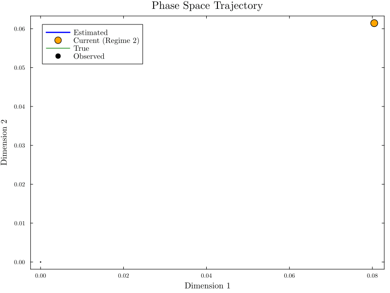

Animations

Animation of the switching states and continuous states over time

Animation of the system trajectory in phase space
Generated on: 2025-03-31 11:11:37
Original analysis: 2025-03-31 11:08:23
| Parameter | Value |
|---|---|
| Number of switching states | 2 |
| Latent state dimension | 2 |
| Observation dimension | 2 |
| Time points | 501 |
This plot shows the estimated regime switches over time.
Dimension 1 state estimation with uncertainty
Dimension 2 state estimation with uncertainty
Free energy convergence during inference
Combined view of all states and observations
Animation of the switching states and continuous states over time
Animation of the system trajectory in phase space